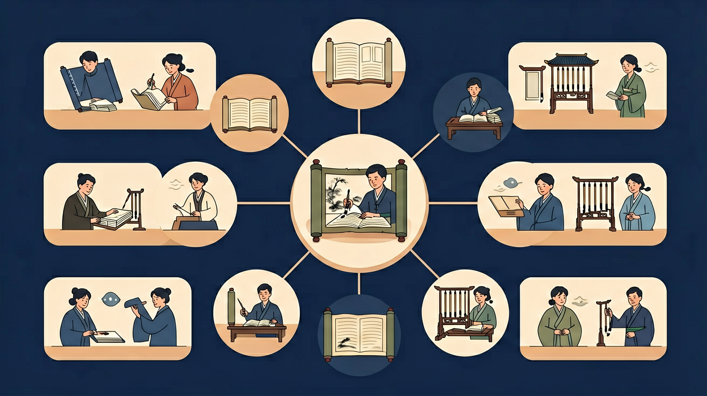
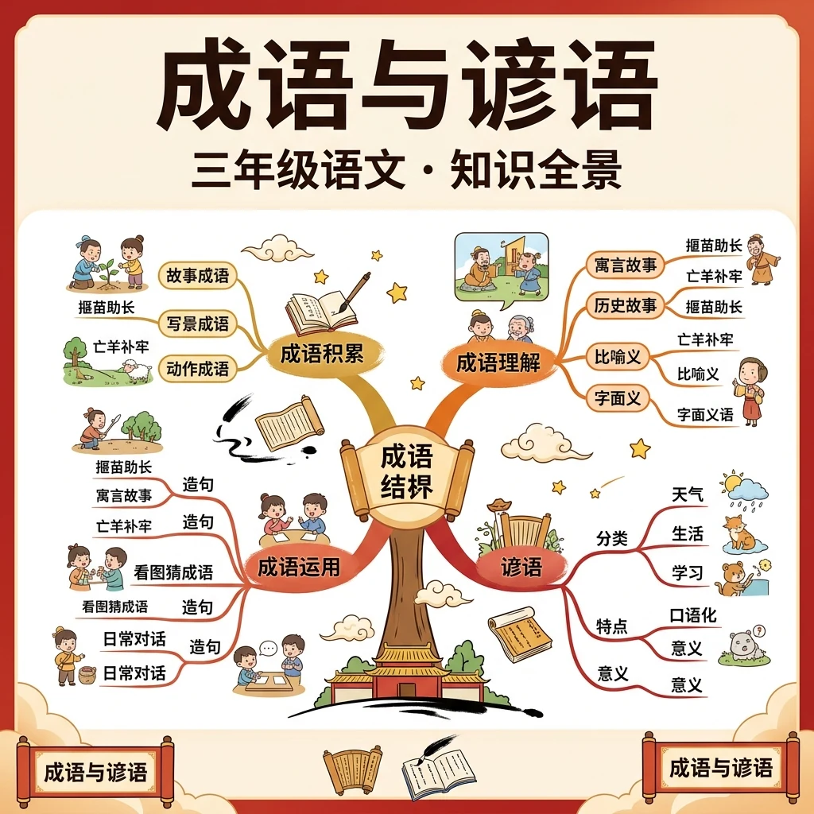

掌握成语与谚语，让你的作文更精彩！

❓ 为什么成语里老有动物？
❓ 谚语和网络流行语有啥区别？
❓ 背了成语但作文用错怎么办？
学完这一课，这些问题你都能自信地回答。
写完整的句子，会用"很开心""非常快"这样的普通词语来描述事情。
写作文时总觉得语言太平淡——"他很努力"写来写去就这一句。看到别人作文里"废寝忘食""水滴石穿"，既生动又有文采，自己却不会用。
学会成语和谚语这两件"语言武器"：成语四个字就能讲一个故事，谚语一句话就能说清一个道理。学会它们，你的作文立刻变得生动有料！
2 道小题，帮你找到自己的起点。答完会给出个性化学习建议。
你在日常阅读中遇到不理解的词语时，通常会？
好的写作最重要的是？
宋国有个农夫，田里有一棵树桩。一天，一只兔子飞奔而来，撞在树桩上折断脖子死了。农夫白捡一只兔子，高兴极了。从此他放下农活，天天守在树桩旁等兔子再来——结果兔子没等到，田地却荒芜了，他成了宋国人的笑话。
寓意：讽刺把偶然的运气当成必然规律、不肯踏实努力的人。用法：含贬义，如"学习没有捷径，守株待兔是不行的"。
楚国几个人分一壶酒，约定谁先画完蛇谁喝。一人最先画完，得意地说："我还能给蛇添上脚！"脚还没画完，另一人画好了，夺过酒说："蛇本来没有脚，你怎么能给它添脚呢？"说完把酒喝了。
寓意：做了多余的事，反而坏了事。用法：含贬义，如"文章结尾已经很完整，再加一段就是画蛇添足了"。
知道故事来源，就不会用错成语——这就是"来源决定用法"。
请同学们收集10个成语和10个谚语，分析它们在字数、结构、使用场合等方面的异同。

热身翻卡 → 三大关卡 → Boss 战 → 成绩单。答对赚星星，解锁 8 枚成就徽章！
认识这些成语了吗？点一点卡片试试！
认识成语，选出正确答案！
补全谚语，体会它的智慧！
把成语和它的意思连起来！
太棒了！你是成语小达人！
谚语是民间口口相传的通俗语句，和成语有三个明显不同：① 来源——谚语来自劳动人民的生活经验，成语多出自古代典籍；② 结构——谚语是完整的一句话（如"众人拾柴火焰高"），成语多是四字短语；③ 语气——谚语口语化，成语书面化。
❌ 常见错误
把"八面玲珑"当褒义词夸人："他这个人处理问题八面玲珑，真是个好人！"
✅ 正确理解
"八面玲珑"形容人处世圆滑，通常含贬义，不能用来夸人。夸人应变能力强可以说"随机应变"。
🩺 诊断口诀：用成语前问自己三个问题：①它是褒义、贬义还是中性？②语境的感情色彩匹配吗？③有没有和近义成语混淆（如"不以为然"≠"不以为意"）？
同桌讨论 30 秒："守株待兔"可以用来表扬一个有耐心的人吗？
A. 可以，耐心等待值得表扬 ｜ B. 不可以，它是贬义词
成语多四字结构，谚语多为短句
成语源自历史典故，谚语来自生活经验
成语书面性强，谚语口语化明显
成语如'画龙点睛'有画面感，谚语如'早起的鸟儿有虫吃'有场景感
用'守株待兔'批评侥幸心理，用'众人拾柴火焰高'倡导 teamwork
先独立作答，再点选项查看对错与错因。
下列哪项是成语？
下列哪项是谚语？
下列哪个成语可以用来形容做事多余？
成语'____'比喻做事多余，反而不恰当。
答案：画蛇添足
'画蛇添足'是正确答案，它比喻做了多余的事，反而不恰当。
谚语'____'告诉我们做事要脚踏实地，从小事做起。
答案：千里之行，始于足下
'千里之行，始于足下'是正确答案，它告诉我们做事要脚踏实地，从小事做起。
✅ 实指谣言重复变'真相'
💡 望文生义忽略典故
✅ 这是谚语，因无典故且结构松散
💡 混淆形式特征
用成语前一定先想清楚它的感情色彩（褒义/贬义/中性）——"守株待兔""画蛇添足""八面玲珑"都是贬义词，千万别用来夸人！
以"我的一天"为题写一段话，至少用上 2 个成语和 1 句谚语，写完后自己检查：成语的感情色彩用对了吗？
口诀：成语有故事，谚语讲道理，四字对短句，千万别混淆
类比：成语像压缩包（需解压典故），谚语像说明书（直接指导生活）
复制提示词到 AI 学伴，生成「成语与谚语」的思维导图或赏析提纲；也可以上传你手绘的示意图，请 AI 学伴点评。
复制后可粘贴到 AI 学伴继续对话。